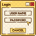
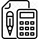

- O projeto me fez descobrir que gosto de trabalhar com links e Iframes.
- Mostrando minha paixão por praia, com localização, gostando ainda mais de trabalhar com Iframe.
- Praticando usar formulário.
- Mais um exercício usando formulário.
- Não é fácil trabalhar com Media Queries, mas no final deu tudo certo.
- Algumas coisas que eu gosto, além de praia!
 - Uma tela de login que eu criei com efeito responsivo. Esse foi trabalhoso.
- Site Android
- Eu amei ter feito esse projeto, porque além de ser fã de poesias, adorei trabalhar com o efeito Paralax.
- Um site que muda a foto e a cor do fundo de acordo com os horários de manhã, tarde e noite.
- Um site que mostra a imagem de uma pessoa de acordo com a sua idade.
 - Um site que você escolhe uma sequência de números e quantos números você deseja pular, ele vai mostrar a sequência de acordo com o que escolheu acompanhado de emojis.
- Um site que mostra a tabuada da sua escolha.
- Um site que analisa a lista de números que você escolheu.
- O usuário escolhe uma cor, ajusta a iluminação e o contraste. Depois de ter escolhido é só apertar o botão e ver se o computador conseguiu acertar a cor desejada.
- Coloque o ano em que você nasceu e veja em qual grupo de gerações você faz parte.
- Um site que você muda a cor de fundo escolhendo os botões ou criando cores através da paleta ou digitando o nome da cor em inglês. Você também pode colocar uma imagem de acordo com as fotos que você tem salva no seu computador ou no celular.
- Jogo jokenpo, o antigo pedra papel e tesoura. Basta você escolher com o que quer jogar. O site informa a sua escolha, mostra quem venceu e exibe os pontos que o jogador e o computador conseguiram na partida.
- Conversor de moedas, um site que converte moedas do real para dolar e euro.
 - Um site responsivo com adição de músicas.
- Um site responsivo com adição de músicas. - Um dos meus sites preferidos.
- Um dos meus sites preferidos. - Trabalhando com degradê e organização de texto.
- Trabalhando com degradê e organização de texto. - Minha primeira tabela com faixa fixa.
- Minha primeira tabela com faixa fixa. - O que é o Iframe e como trabalhar com ele.
- O que é o Iframe e como trabalhar com ele. - O projeto me fez descobrir que gosto de trabalhar com links e Iframes.
- O projeto me fez descobrir que gosto de trabalhar com links e Iframes. - Mostrando minha paixão por praia, com localização, gostando ainda mais de trabalhar com Iframe.
- Mostrando minha paixão por praia, com localização, gostando ainda mais de trabalhar com Iframe. - Praticando usar formulário.
- Praticando usar formulário. - Não é fácil trabalhar com Media Queries, mas no final deu tudo certo.
- Não é fácil trabalhar com Media Queries, mas no final deu tudo certo. - Algumas coisas que eu gosto, além de praia!
- Algumas coisas que eu gosto, além de praia! - Site Android
- Site Android - Eu amei ter feito esse projeto, porque além de ser fã de poesias, adorei trabalhar com o efeito Paralax.
- Eu amei ter feito esse projeto, porque além de ser fã de poesias, adorei trabalhar com o efeito Paralax.